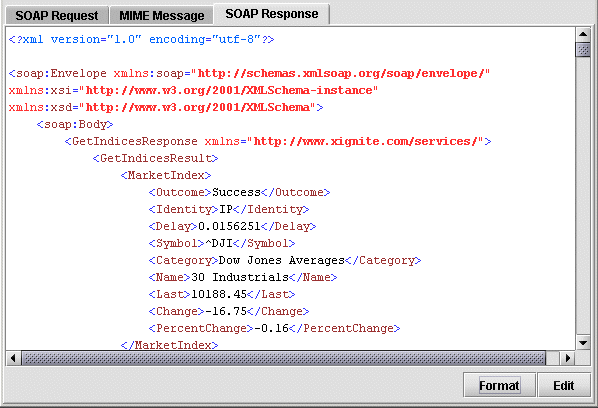

Exchanger XML Editor provides a tool for analyzing a Web Services Decsription Language (WSDL) document and generating appropriate SOAP requests for invoking operations described in the document.
Open the Stock Quote WSDL project and in the wsdl folder, open the remote file http://www.xignite.com/xquotes.asmx?WSDL (or alternatively, open the local copy of this file, named local.wsdl). Now select Tools->Analyse WSDL and choose From Current Document in the dialog.

Figure 1. WSDL Analyzer
The WSDL file will be analysed and you will be presented with a dialog displaying the information relating to the Services and Operations available, the connection details including URL and SOAP Action (if any) and a sample SOAP message in the SOAP Request tab. In the Operations drop down menu, navigate to the end and choose the GetIndices operation and press Send.
Figure 2. WSDL GetIndices SOAP Response
The information returned from the web service (in this case a summary of the Nasdaq and NYSE stock indices) will be displayed in the SOAP Response tab. Press the Format button to make the response easier to read and press the Edit button if you would like to use the data inside the editor.
To see how to call a web service where an input is required, select the GetQuote operation and notice how in the SOAP Request, there is a <Symbol> tag with the content "string". Replace this content with a symbol, say, IBM press Send. The SOAP Response should display the current stock price for IBM (or, if the markets are closed, the previous closing price).